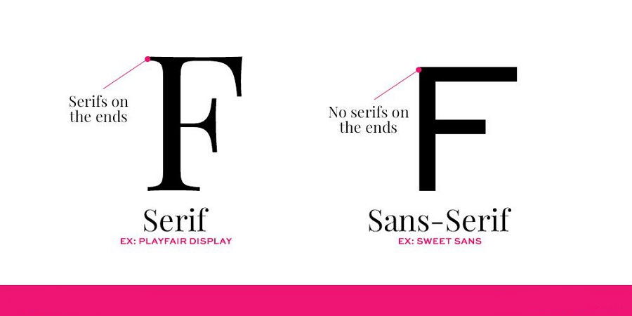
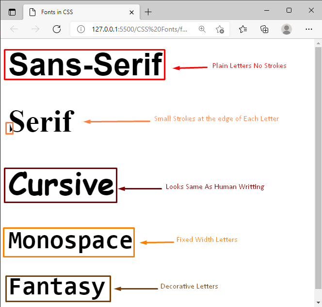

Fonts
After the color, the font is probably the most basic property of a page. The CSS term font family is matched with the typographical term typeface, which is a grouping of fonts defined by shared design styles. A font is a particular set of glyphs (character shapes), differentiated from other fonts in the same family by additional properties such as stroke weight, slant, relative width, etc.
Font family
Larsseit Font Family was designed by Nico Inosanto, and published by Type Dynamic. Larsseit contains 12 styles and family package options.
Larsseit - это гротеск, в котором очень низкая контрастность сочетается с классическими пропорциями. Larsseit подчеркивает чистоту, удобочитаемость и объективность. Семейство Larsseit включает 6 начертаний, от UltraThin до Black, с соответствующими им курсивом и маленькими заглавными буквами.
Lato is a sans serif typeface family started in the summer of 2010 by Warsaw-based designer Łukasz Dziedzic (“Lato” means “Summer” in Polish). In December 2010 the Lato family was published under the Open Font License by his foundry tyPoland, with support from Google. In the last ten or so years, during which Łukasz has been designing type, most of his projects were rooted in a particular design task that he needed to solve. With Lato, it was no different. Originally, the family was conceived as a set of corporate fonts for a large client — who in the end decided to go in different stylistic direction, so the family became available for a public release.
Работая над Lato, Лукаш пытался тщательно сбалансировать некоторые потенциально конфликтующие приоритеты. Он хотел создать шрифт, который казался бы довольно «прозрачным» при использовании в основном тексте, но отображал бы некоторые оригинальные черты при использовании в больших размерах. Он использовал классические пропорции (особенно заметные в верхнем регистре), чтобы придать формам букв знакомую гармонию и элегантность. В то же время он создал гладкий шрифт без засечек, который делает очевидным тот факт, что Lato был разработан в 2010 году, хотя он не соответствует какой-либо современной тенденции.
Roboto has a dual nature. It has a mechanical skeleton and the forms are largely geometric. At the same time, the font features friendly and open curves. While some grotesks distort their letterforms to force a rigid rhythm, Roboto doesn’t compromise, allowing letters to be settled into their natural width. This makes for a more natural reading rhythm more commonly found in humanist and serif types.This is the regular family, which can be used alongside the Roboto Condensed family and the Roboto Slab family.
Pacifico is an original and fun brush script handwriting font by Vernon Adams which was inspired by the 1950s American surf culture in 2011. It was redrawn by Jacques Le Bailly at Baron von Fonthausen in 2016. It was expanded to Cyrillic by Botjo Nikoltchev and Ani Petrova at Lettersoup in 2017. The Pacifico project was commissioned by Google from Vernon Adams, an English type designer who lived in San Clemente, Los Angeles, USA.
Times New Roman is the default font used by the browser. Times New Roman is one of the most recognizable fonts in the world. It looks professional and is used in many newspapers and "news" websites. It is also the primary font for Windows devices and applications.
Google Fonts
Google Fonts is a library of 1455 open source font families and APIs for convenient use via CSS and Android.

The library also has delightful and beautifully crafted icons for common actions and items. Download them for use in your digital products for Android, iOS, and web.
Several factors can help you decide on which Google Font to choose. When it comes to choosing a web font to use, you should consider readability, purpose, Google font combinations, popularity, and intuition. Here are a few ideas to help you better understand which fonts you should use in different situations:
- 1. Readability
If you’re composing a book, blog content, or anything text-heavy you should consider choosing a serif font. A serif font is one where it appears like the letters have “feet.” These feet connect the letters closer together which helps make them easier to read. If you look at sans serif fonts, they don’t have these feet-like extensions, which makes it slightly more difficult to read longer passages.
- 2. Purpose
When it comes to choosing a font, it can boil down to the purpose it’s being used for. For example, you might use Google Fonts handwriting font when it comes to wedding invitations as it’s customary to use cursive fonts in that setting. You might choose a more formal font like Helveticish for your resume since it’ll create a cleaner look. If you’re using a funkier font like ABYS, it’ll be to highlight a word or two in a design rather than for something more text-heavy. You want to choose a Google font that’s appropriate for the design, context, and industry you’re using the font for.
- 3. Best Google Font Combinations
We’ll share some Google Font combinations later on in this article. However, when choosing a pair of fonts, you should consider how complementary they are to one another. You might pair a modern sans serif title with a serif body text.
- 4. Use Popular Fonts
With over 900 fonts, you might think that any of them could work on any occasion. However, most designers will often resort to the same few number of fonts that work well for most designs. For example, when creating pins on Pinterest, I noticed that the Google font Playfair Display works well at compelling clicks when it’s italicized. I’ve tried several other fonts on the platform but my best-performing pins always come from that same Google font. With experience, you’ll start to select your top few fonts too. It’s okay to use the same Google Fonts frequently. If it works, don’t be afraid to keep using it.
- 5. Go With Your Gut
Sometimes a font seems right and other times it seems off. While some of the rules above can help you determine the right font, there are just too many Google Fonts to create perfect rules for. At times, you’ll need to experiment and play around with the font selections to see what looks best. If you understand the standard graphic design principles and elements, you’ll have a better idea of which font works best when working on a whole design.